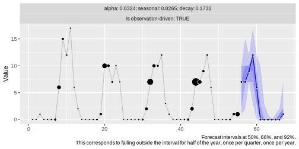
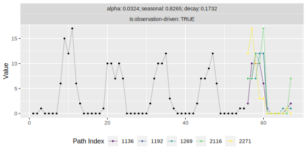
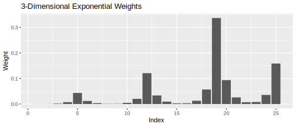
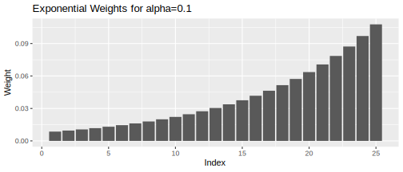
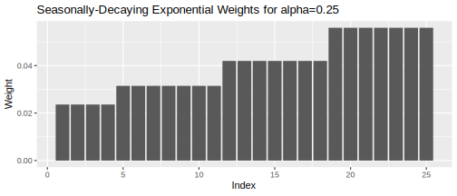
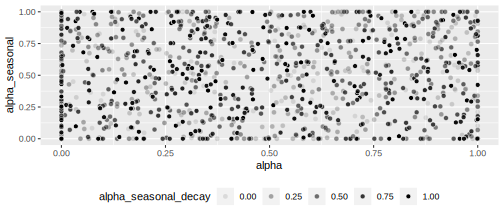

Use 3DX to generate interpretable probabilistic forecasts by purely weighting values from the observed time series.
What’s unique about 3DX is that it can be used to derive forecasts not only based on a “latent state” but also observation-driven, drawing future realizations purely from observed values. This can be effective for count or intermittent series.
3DX builds on ideas from the NPTS model described in Alexandrov et al. (2019). Its sampling distribution is a combination of three components: The first weighs observations exponentially, the second weighs observations within each seasonal period exponentially, the third weighs the seasonal periods over time exponentially.
Installation
You can install the development version of threedx from GitHub with:
# install.packages("devtools")
devtools::install_github("timradtke/threedx")Written in pure R, with the checkmate package as the only direct dependency, installing threedx is a breeze.
Get Started
Let’s generate a sparse monthly time series that has a strong seasonality.
To forecast the series, we first fit a model by learning appropriate weights given the period length of the series’ seasonality.
Afterwards, the model can be used to derive a forecast using R’s predict() method.
library(threedx)
model <- threedx::learn_weights(
y = y,
period_length = 12L,
alphas_grid = threedx::list_sampled_alphas(
n_target = 1000L,
include_edge_cases = TRUE
),
loss_function = loss_mae
)
forecast <- predict(
object = model,
horizon = 12L,
n_samples = 2500L,
observation_driven = TRUE
)When ggplot2 is available, we can use autoplot() to visualize the forecast object:

The native output of a 3DX model are forecast sample paths, which can be accessed via forecast$paths. Visualize (a few of) them instead of quantile predictions by specifying the method "paths":
autoplot(forecast, method = "paths", n = 5)
How It Works
The basis for a 3DX model are different ways of assigning a categorical probability distribution to the indices of the observed time series.
The distribution used in a 3DX model is based on a combination of three components that come together in weights_threedx(). For a time series of 25 daily observations, weights could look like this:
threedx::weights_threedx(
alpha = 0.1,
alpha_seasonal = 0.75,
alpha_seasonal_decay = 0.25,
n = 25L,
period_length = 7L
)
#> [1] 0.0003333007 0.0003703341 0.0016459293 0.0073152415 0.0433495791
#> [6] 0.0120415498 0.0033448749 0.0009291319 0.0010323688 0.0045883058
#> [11] 0.0203924702 0.1208442681 0.0335678523 0.0093244034 0.0025901121
#> [16] 0.0028779023 0.0127906768 0.0568474525 0.3368737929 0.0935760536
#> [21] 0.0259933482 0.0072203745 0.0080226383 0.0356561704 0.1584718684
3DX weights are the product of three separate weight components.
Exponential Weights
The simplest weight component is to assign exponentially decreasing weights. For a time series of daily observations with 25 observations, the weights could look like this:
threedx::weights_exponential(alpha = 0.1, n = 25)
#> [1] 0.008593575 0.009548417 0.010609352 0.011788169 0.013097966 0.014553295
#> [7] 0.016170328 0.017967031 0.019963368 0.022181520 0.024646133 0.027384593
#> [13] 0.030427325 0.033808139 0.037564599 0.041738443 0.046376048 0.051528942
#> [19] 0.057254380 0.063615978 0.070684420 0.078538245 0.087264716 0.096960796
#> [25] 0.107734218
Exponential weights are great as they smoothly interpolate between a mean forecast for alpha = 0 and a random walk or naive forecast for alpha = 1.
But in many cases, we would like to model also a seasonal component of a time series. 3DX approaches this with two additional weight components.
Exponential Seasonal Weights
The first assigns exponential weights within a seasonal period. Again, consider the time series of 25 daily observations. We suspect a weekly seasonality and set period_length = 7 when deriving seasonal weights:
threedx::weights_seasonal(alpha_seasonal = 0.75, n = 25, period_length = 7)
#> [1] 0.002941176 0.002941176 0.011764706 0.047058824 0.188235294 0.047058824
#> [7] 0.011764706 0.002941176 0.002941176 0.011764706 0.047058824 0.188235294
#> [13] 0.047058824 0.011764706 0.002941176 0.002941176 0.011764706 0.047058824
#> [19] 0.188235294 0.047058824 0.011764706 0.002941176 0.002941176 0.011764706
#> [25] 0.047058824Starting from the point to be predicted next (index 26), the largest weight is assigned to the index period_length-steps ago, index 19. The same weight is assigned every other period_length-steps before that. Within a period, weights decay symmetrically, with larger weights closer to the season that is being predicted. Thus the index that is one step before the index to be predicted will have the second highest weight.

Seasonally-Decaying Exponential Weights
The final component assigns exponential weights across the seasonal periods but constant weights within a period:
threedx::weights_seasonal_decay(
alpha_seasonal_decay = 0.25,
n = 25,
period_length = 7
)
#> [1] 0.02360140 0.02360140 0.02360140 0.02360140 0.03146853 0.03146853
#> [7] 0.03146853 0.03146853 0.03146853 0.03146853 0.03146853 0.04195804
#> [13] 0.04195804 0.04195804 0.04195804 0.04195804 0.04195804 0.04195804
#> [19] 0.05594406 0.05594406 0.05594406 0.05594406 0.05594406 0.05594406
#> [25] 0.05594406Starting from the point to be predicted next (index 26), the largest weight is assigned to the index period_length-steps ago, index 19. The same weight is assigned every other period_length-steps before that. Within a period, weights decay symmetrically, with larger weights closer to the season that is being predicted. Thus the index that is one step before the index to be predicted will have the second highest weight.

Learning the Optimal Weights
The weights generated by weights_threedx() are determined by three parameters: alpha, alpha_seasonal, and alpha_seasonal_decay. These three parameters define a 3DX model.
Each of the three parameters can take values between 0 and 1. Larger values lead to faster decaying weights, assigning more weight to more recent (seasonal) time indices. Smaller values lead to more uniform weighting of time indices.
In learn_weights(), the optimal parameter combination is identified by evaluating those defined in alphas_grid based on the provided loss_function. Arbitrary loss functions of the observations y and fitted values y_hat can be optimized as black-box function in one-shot optimization. See, for example, loss_rmse() or loss_mae_with_observation_weight()—then define your own!
The alphas_grid is a data frame in which each row represents a parameter combination. Combinations to be evaluated can be drawn uniformally using list_sampled_alphas():
alphas_grid <- list_sampled_alphas(
n_target = 1000L,
alpha_lower = 0,
alpha_upper = 1,
alpha_seasonal_lower = 0,
alpha_seasonal_upper = 1,
alpha_seasonal_decay_lower = 0,
alpha_seasonal_decay_upper = 1,
include_edge_cases = TRUE
)
round(tail(alphas_grid), 4)
#> alpha alpha_seasonal alpha_seasonal_decay
#> 995 0.3313 0.4698 1.0000
#> 996 0.7007 0.0188 0.3768
#> 997 0.8676 0.9452 0.5221
#> 998 0.8650 0.6694 0.0820
#> 999 0.6261 0.8915 0.5038
#> 1000 0.2067 0.3665 0.1281
Of course there is no need to use list_sampled_alphas() to generate the set of parameter combinations to be evaluated. As only a data frame of columns alpha, alpha_seasonal, alpha_seasonal_decay is required, you can any set of parameters you see fit. This can be useful to re-use previously determined parameters, or values close to them.
3DX Interpolates Between Edge Cases
Similarly to how simple exponential smoothing interpolates between the mean forecast and the naive forecast, 3DX interpolates between 1) the mean forecast, 2) the naive forecast, 3) the seasonal naive forecast, 4) the seasonal mean forecast, and 5) the last period’s mean forecast.
The paramater combinations that encode those models can be listed using list_edge_alphas():
list_edge_alphas()
#> alpha alpha_seasonal alpha_seasonal_decay
#> 1 0 0 0
#> 2 1 0 0
#> 3 0 1 1
#> 4 0 1 0
#> 5 0 0 1By choosing include_edge_cases = TRUE in list_sampled_alphas(), the first five of the returned parameter combinations are those edge cases. By including them, the edge cases are evaluated alongside all other parameter combinations in learn_weights().
References
Alexander Alexandrov, Konstantinos Benidis, Michael Bohlke-Schneider, Valentin Flunkert, Jan Gasthaus, Tim Januschowski, Danielle C. Maddix, Syama Rangapuram, David Salinas, Jasper Schulz, Lorenzo Stella, Ali Caner Türkmen, Yuyang Wang (2019). GluonTS: Probabilistic Time Series Models in Python. https://arxiv.org/abs/1906.05264
James Bergstra, Yoshua Bengio (2012). Random Search for Hyper-Parameter Optimization. https://www.jmlr.org/papers/volume13/bergstra12a/bergstra12a.pdf
Jan Gasthaus (2016). Non-parametric time series forecaster. Technical report, Amazon, 2016.
Rob J. Hyndman, Anne B. Koehler, Ralph D. Snyder, and Simone Grose (2002). A State Space Framework for Automatic Forecasting using Exponential Smoothing Methods. https://doi.org/10.1016/S0169-2070(01)00110-8
Syama Sundar Rangapuram, Matthias W. Seeger, Jan Gasthaus, Lorenzo Stella, Yuyang Wang, Tim Januschowski (2018). Deep State Space Models for Time Series Forecasting. https://papers.nips.cc/paper/2018/hash/5cf68969fb67aa6082363a6d4e6468e2-Abstract.html
Suman Ravuri et al. (2021). Skilful precipitation nowcasting using deep generative models of radar. https://www.nature.com/articles/s41586-021-03854-z
Rafael de Rezende, Katharina Egert, Ignacio Marin, Guilherme Thompson (2021). A White-boxed ISSM Approach to Estimate Uncertainty Distributions of Walmart Sales. https://arxiv.org/abs/2111.14721
Matthias Seeger, David Salinas, Valentin Flunkert (2016). Bayesian Intermittent Demand Forecasting for Large Inventories. https://papers.nips.cc/paper/2016/hash/03255088ed63354a54e0e5ed957e9008-Abstract.html
Matthias Seeger, Syama Rangapuram, Yuyang Wang, David Salinas, Jan Gasthaus, Tim Januschowski, Valentin Flunkert (2017). Approximate Bayesian Inference in Linear State Space Models for Intermittent Demand Forecasting at Scale. https://arxiv.org/abs/1709.07638
P. R. Winters (1960). Forecasting Sales by Exponentially Weighted Moving Averages. https://doi.org/10.1287/mnsc.6.3.324